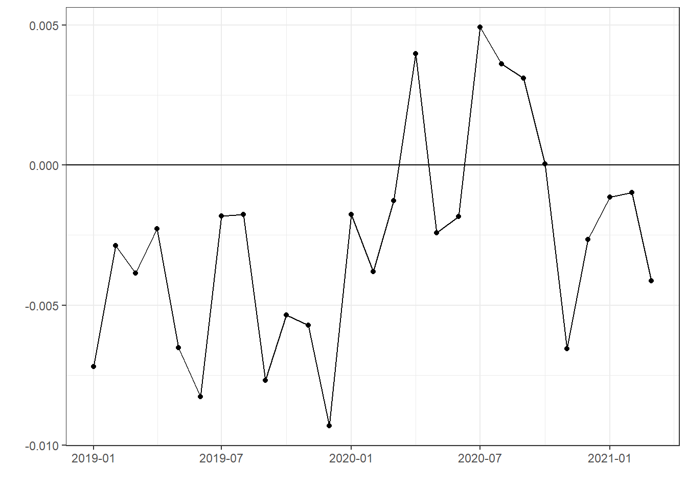

Chapter 3 Simple description
3.1 Environment
library(data.table)
library(tidytable)
library(tidyverse)
library(lubridate)3.2 Data
raw <-
fread("data/aggregate_time_series.csv") %>%
mutate(date = ymd(date),
employment = as.numeric(就業者)/as.numeric(`15歳以上人口`),
sex = if_else(性別 == "男", "male", "female"))3.3 Employment rate
- Report \(e_{g,m,y} = \frac{Employment_{g,m,y}}{Population_{g,m,y}}\), where \(Employment_{g,m,y}\) and \(Population_{g,m,y}\) are numbers of employment and population over 15 years old in month \(m\), year \(y\) and gender group \(g\), respectively.
raw %>%
filter(date >= "2019-01-01") %>%
ggplot(aes(x = date,
y = employment,
color = sex)
) +
geom_line() +
theme_bw() +
ylab("employment rate")
3.4 Year-to-year difference of employment rate
- Report change of employment rate \(\tilde e_{g,m,y}=e_{g,m,y}-e_{g,m,y-1}\)
raw %>%
mutate(year = year(date),
month = month(date)
) %>%
arrange(sex,
month,
year) %>%
group_by(sex,
month) %>%
mutate(employment = employment - lag(employment)) %>%
ungroup %>%
filter(year >= 2019) %>%
ggplot(aes(x = date,
y = employment,
color = sex)
) +
geom_line() +
geom_point() +
geom_hline(yintercept = 0) +
ylab("") +
xlab("") +
theme_bw() +
theme(legend.position = "bottom")
3.5 Gender gap
- Report change of employment rate \(\tilde e_{male,m,y} - \tilde e_{female,m,y}\)
raw %>%
mutate(year = year(date),
month = month(date)
) %>%
arrange(sex,
month,
year) %>%
group_by(sex,
month) %>%
mutate(employment = employment - lag(employment)) %>%
ungroup %>%
filter(year >= 2019) %>%
arrange(date,
sex) %>%
group_by(date) %>%
mutate(employment = employment - lag(employment)) %>%
ungroup %>%
filter(sex == "male") %>%
ggplot(aes(x = date,
y = employment)
) +
geom_line() +
geom_point() +
geom_hline(yintercept = 0) +
ylab("") +
xlab("") +
theme_bw()